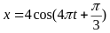

Mỗi câu có 4 phương án, chỉ chọn một đáp án đúng (0,25 điểm).
1
Nhận biết
Một vật dao động điều hòa với tần số góc ω. Chu kỳ dao động của vật được tính bằng công thức
2
Nhận biết
Đơn vị của tần số góc ω là
3
Nhận biết
Tần số của một vật dao động điều hòa là
4
Nhận biết
Dao động điều hòa là dao động tuần hoàn trong đó
5
Nhận biết
Một vật dao động điều hòa theo phương trình $x = A\cos(\omega t + \varphi)$ ($\omega > 0$). Tần số góc của dao động là
6
Nhận biết
Một vật dao động điều hòa theo phương trình

(cm) (t tính bằng s). Pha của dao động là
7
Nhận biết
Độ lệch cực đại so với vị trí cân bằng gọi là
8
Nhận biết
Vật dao động điều hòa với biên độ, tần số và pha ban đầu lần lượt là A, f, φ. Đại lượng luôn dương trong ba đại lượng trên là
9
Nhận biết
Phương trình li độ của dao động điều hòa có dạng.
10
Nhận biết
Một chất điểm dao động có phương trình $x=6\cos\omega t$ (cm). Dao động của chất điểm có biên độ là:
11
Nhận biết
Một vật nhỏ dao động với $x=5\cos\left( \omega t+0{,}5\pi\right)$ cm. Pha ban đầu của dao động là:
12
Nhận biết
Một chất điểm dao động điều hoà có tần số góc $\omega$ = 10π (rad/s). Tần số của dao động là
13
Nhận biết
Một chất điểm dao động điều hòa trên trục Ox theo phương trình $x = 2\pi\cos(\pi t + 1{,}5\pi)$ cm, với t là thời gian. Pha dao động tại thời điểm t là
14
Nhận biết
Một chất điểm dao động điều hoà theo phương trình $x = 5\cos(2\pi t)$ cm, chu kỳ dao động của chất điểm là
15
Nhận biết
Một vật dao động điều hoà theo phương trình $x = 6\cos(4\pi t)$ cm, tần số dao động của vật là
16
Nhận biết
Một chất điểm dao động điều hòa với phương trình $x = 10\cos 2\pi t$ (cm). Li độ của chất điểm ở thời điểm t = 1 s là
17
Nhận biết
Một chất điểm dao động điều hòa với tần số 2 Hz. Chu kỳ dao động của chất điểm là
18
Nhận biết
Một chất điểm dao động điều hòa với phương trình $x = 10\cos\pi t$ (cm). Chu kỳ dao động của chất điểm là
19
Nhận biết
Pha ban đầu của dao động điều hòa có đơn vị là
20
Nhận biết
Một chất điểm dao động điều hòa, trong thời gian một phút vật thực hiện được 60 dao động. Tần số dao động của chất điểm là